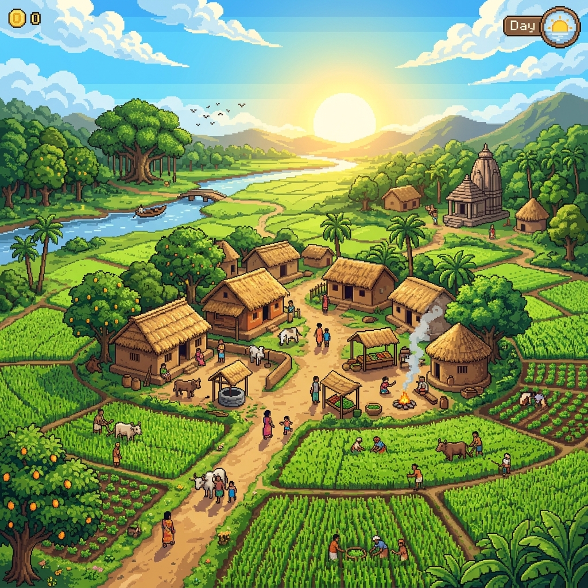

Discovery comes through practice, not menus. Unlocked Vidyas:
Memory fragments found by sleeping in special places or bonding with Sages.
Your spiritual lineage across the epochs.
Since time immemorial, the island of Mayaworld remained in perfect harmony under the eternal law of Rta, guided by the wisdom of the Nine Sages.
But the Tenth Sage, Tamas, consumed by desire to conquer Rta, succumbed to the corruption of the ego. He became Mayasur, a demonic shadow lashing out against the light.
As the cycle fractures, you are born as Samat, the Seeker. You must walk the overworld, master the sacred Vidyas, stoke the fires of Sadhana, and resolve the balance before your final breath fades.
The cycles of Samsara await. Every rebirth carries your spiritual essence forward. Seek the Altar of Vows at the center of the world...